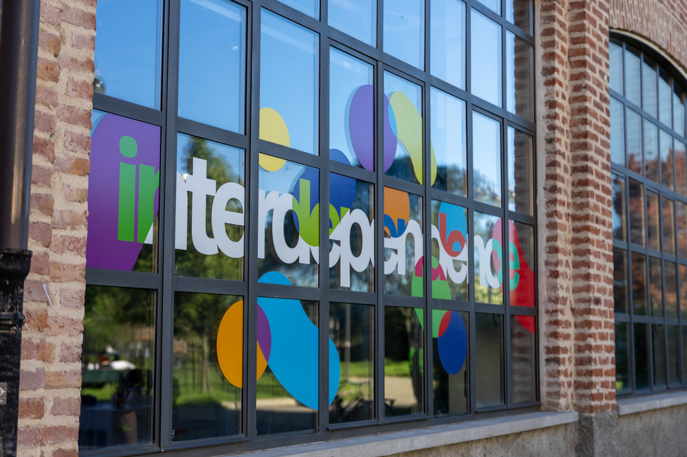
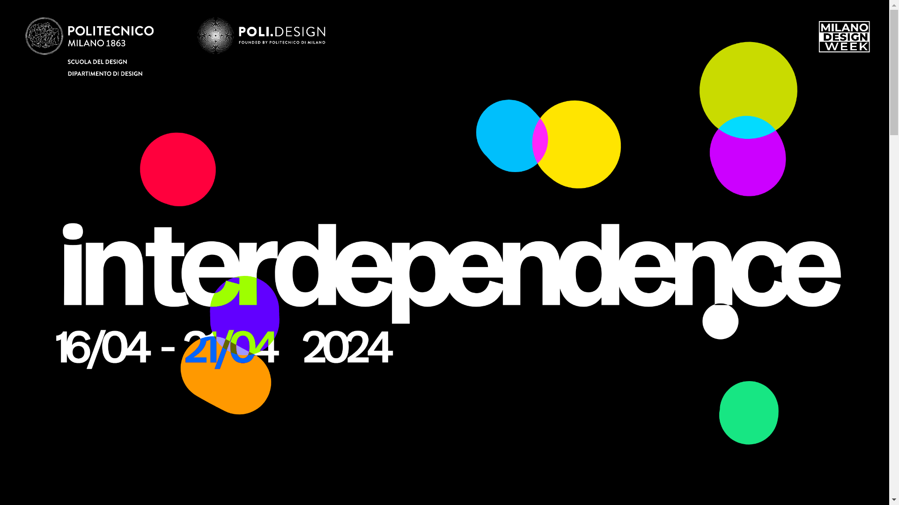
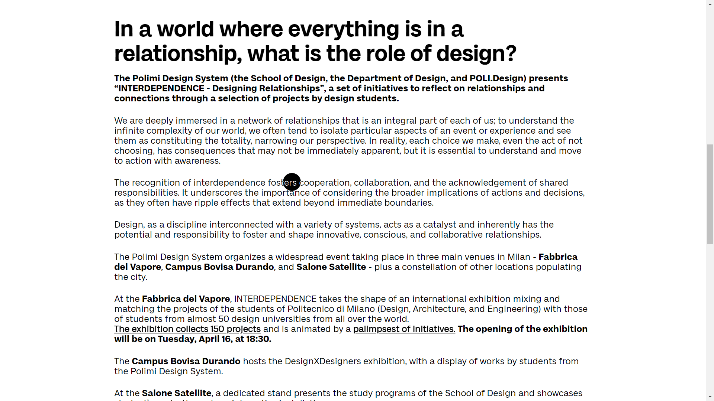
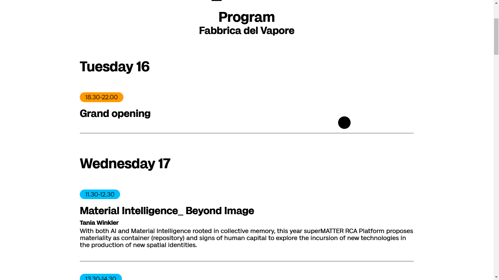
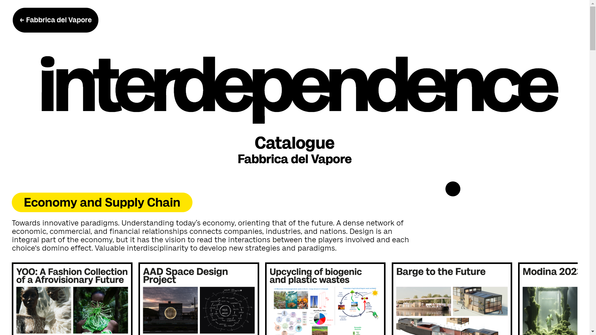
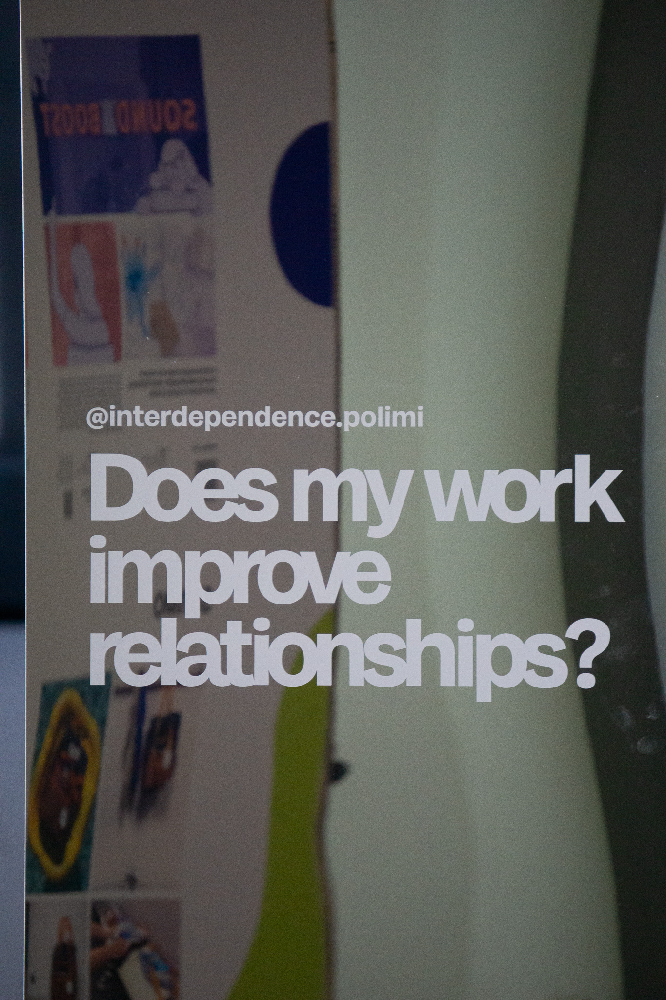
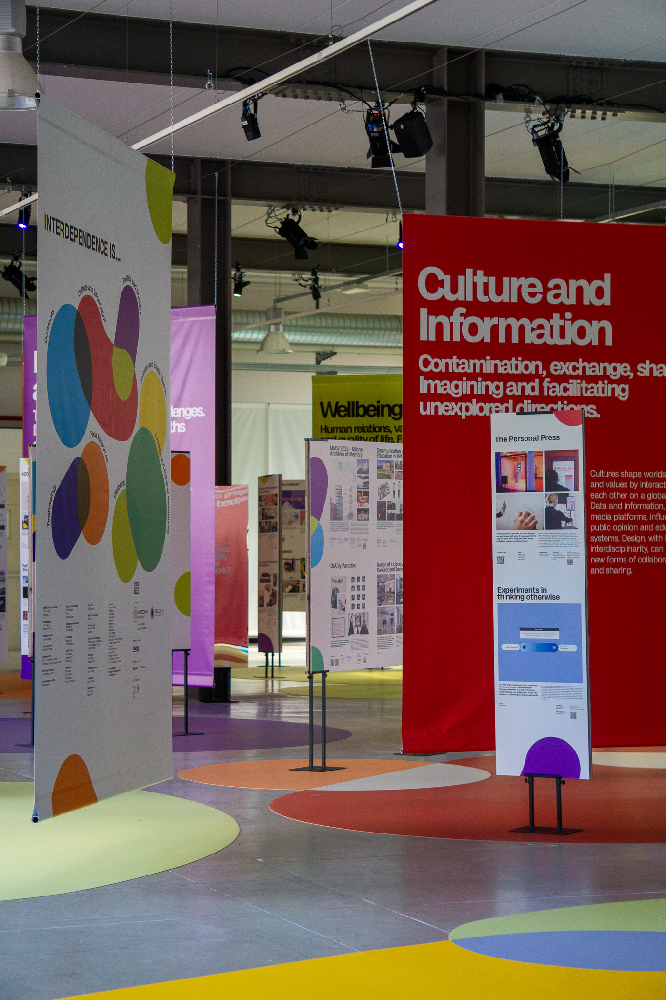

Interdependence is a diffuse event organised by the Politecnico di Milano to celebrate Milan Design Week 2024, exploring the fabric of the city of Milan. Through a selection of projects by students from the Politecnico and around 50 international universities, Interdependence aims to reflect on the relationships and connections that characterise the world we live in. The exhibition took place at three main venues — Fabbrica del Vapore, Campus Bovisa Durando, and Salone Satellite — as well as other locations around the city.
I had the opportunity to be part of the design team of the event, which led me to work at the beginning on the concept of the exhibition, to later turn to work exclusively on the interaction and the website of the event.
The Interdependence website was developed based on the exhibition's brand identity, characterized by large rounded shapes and vibrant colors that overlap and interact with each other. Interdependence showcases design projects from students worldwide with the goal of inspiring empathy and collaboration, not only among designers and creatives but also across professionals from all fields. The website was designed to embody this spirit of connection and interdependence.
The site structure was kept intentionally straightforward for ease of navigation: a landing page and four main sub-pages, each representing one of the four exhibition locations. Each page contains essential information and a brief description of the venue, maintaining clarity without overwhelming the user.
To maintain consistency with the visual identity, the mouse pointer was customized to interact dynamically with the interface. When hovering over elements, it reveals the background beneath, creating a distinctive visual effect. The pointer also enlarges when positioned over links, enhancing navigation intuitiveness.




The landing page features a dynamic element: freely moving blobs, each representing a macro area of the exhibition. As they overlap, they create constantly evolving visual compositions that reinforce the concept of interconnectedness. This effect was developed using p5.js, building upon an existing sketch by kusakari that I adapted and customized to align with our project requirements.
Additionally, the user's cursor can interact with the blobs, allowing them to influence the composition. This interactive element emphasizes that everyone plays a role in shaping connections - reflecting the core message of Interdependence.

